About
Meetings
Location
Link 3
Dancing
Broadsword Academy
Contact
Come Join Us!
Established in 1976, the Caledonian Society of Baton Rouge was founded to preserve and promote the unique and exciting culture of Scotland.
Established in 1976, the Caledonian Society of Baton Rouge was founded to preserve and promote the unique and exciting culture of Scotland.